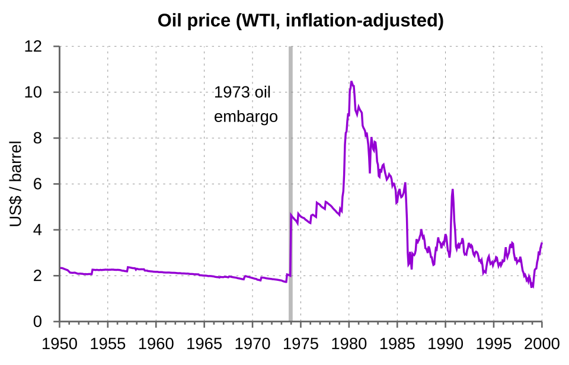

FILE FCP-45 HISTORICAL CASE FILE
The 1973 Arab oil embargo and the oil-price shock
ASSESSMENT: Political embargo and coordinated producer leverage are documented; claims that one secret group controlled every oil price are not.
Documented findings, economic interpretation and unresolved claims are assessed separately.

Claim under review
The question is whether the embargo and price shock were a single cartel plot, or overlapping political action and producer bargaining.
OAPEC’s embargo and production cuts followed the October War, while OPEC’s price bargaining reflected a longer shift in producer power. Grouping these actions into one “oil cartel” obscures distinct memberships, decisions and purposes.
Context and timeline
After the October 1973 war, Arab members of OAPEC announced production cuts and an embargo against selected states. OPEC negotiations and market repricing raised posted oil prices; the United States introduced allocation and conservation measures.
Embargo targeting, production reductions and the rise in posted prices did not have identical effects on U.S. physical supply. World prices adjusted across markets, and the shock interacted with demand growth, limited spare capacity and U.S. allocation policy.
Primary records and formal findings
U.S. diplomatic records and OAPEC statements document the embargo’s political targeting and production decisions. They do not support treating OPEC and OAPEC as identical organizations or the embargo as a secret U.S. financial conspiracy.
FRUS records show diplomacy and U.S. policy response; Hamilton estimates macroeconomic effects of oil shocks. Use them to separate political cause, supply mechanism and recession impact rather than treating all three as proof of unified price control.
Independent economic evidence
James Hamilton’s oil-market research finds the shock materially contributed to recession; production and price data distinguish supply restriction from broader demand and policy effects.
The embargo’s geopolitical purpose, the producers’ supply choices and the global price shock are separate elements. Price and production series allow each to be measured without assuming one body controlled all oil markets.
Counter-evidence and limitations
The embargo’s direct U.S. supply effect was limited relative to global price changes, and producers’ market power differed by time. Price increases also reflected the end of low-cost spare capacity and demand growth.
Falsifiable checks and assessment
Compare production cuts, destination flows, posted and spot prices and alternative suppliers; separate diplomatic embargo effects from OPEC bargaining and global scarcity.
Assessment: Political embargo and coordinated producer leverage are documented; claims that one secret group controlled every oil price are not.
Sources and evidentiary notes
- U.S. Department of State, FRUS, Arab-Israeli Crisis and Oil Embargo records (1973–74)Primary diplomacy and policy response. Its findings are limited to the parties, conduct, dates or mandate covered by that record.
- OAPEC communiqués (October 1973)Direct statements of embargo and production decisions. It addresses this episode but cannot alone resolve the broader causal question.
- James D. Hamilton, “Historical Oil Shocks,” in Handbook of Major Events in Economic History (2011)Academic analysis of price and recession effects. This work tests an economic interpretation; its estimates depend on data and assumptions and do not establish intent.
Historical research only; not investment or legal advice.